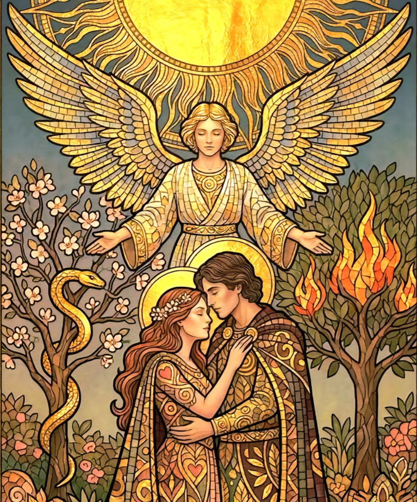

♡
قراءة عاطفية مفصلة بينك وبين الشريك

قراءة عاطفية مفصلة بينك وبين الشريك: طاقتك تجاه شريك حياتك، مشاعره ونواياه. تفكير عقله وخطواته القادمة نحوك. القادم بينكما بشكل عام، مصير العلاقة، نصائح ورسائل التاروت بخصوصه. اطرح الأسئلة العالقة بذهنك نحوه.
اطلب قراءة ←